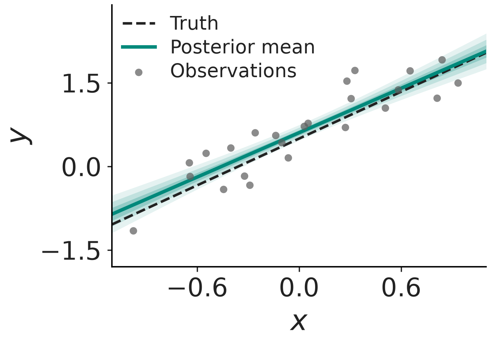
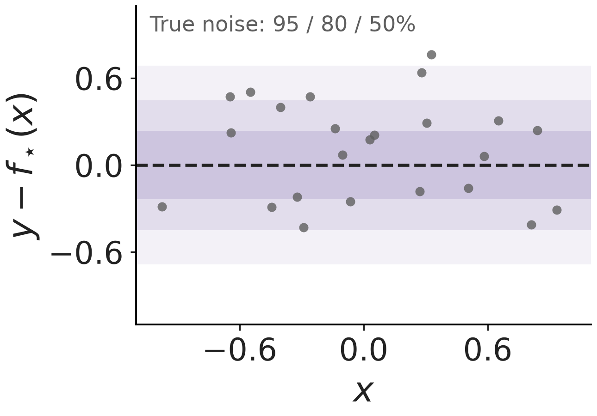

An offline layout gallery
Presenter name
Research group · Event · Date
What relationship do we want to learn?
State the assumptions and the uncertainty.
Compare predictions with observed data.
Say what the results support.
We describe a response with a linear mean.
\[y_i = \beta_0 + \beta_1 x_i + \varepsilon_i\]
\[\varepsilon_i\sim N(0,\sigma^2),\qquad \boldsymbol\beta\sim N(\mathbf0,I_2)\]
The posterior describes uncertainty about the intercept and slope.
Pointwise credible intervals
At each input, the band contains a stated amount of posterior probability for the mean response.
These figures use Matplotlib.
(Hunter, 2007)
Hunter, J. D. (2007). Matplotlib: A 2D graphics environment. Computing in Science & Engineering, 9(3), 90–95. https://doi.org/10.1109/MCSE.2007.55
Gaussian prior + Gaussian noise
\[\boldsymbol\beta\mid\mathbf y\sim N(m,V)\]
The covariance keeps uncertainty in both coefficients.
def posterior(X, y, sigma):
precision = np.eye(2) + X.T @ X / sigma**2
covariance = np.linalg.inv(precision)
mean = covariance @ X.T @ y / sigma**2
return mean, covariancePredictions · residuals · uncertainty
A small synthetic example with known observation noise.


Left: posterior intervals for the mean. Right: the known observation-noise distribution.
def posterior(X, y, sigma):
precision = np.eye(2) + X.T @ X / sigma**2
covariance = np.linalg.inv(precision)
mean = covariance @ X.T @ y / sigma**2
return mean, covariancedef posterior(X, y, sigma):
precision = np.eye(2) + X.T @ X / sigma**2
covariance = np.linalg.inv(precision)
mean = covariance @ X.T @ y / sigma**2
return mean, covarianceUpdate the posterior as each observation arrives.
Presenter name · Contact details